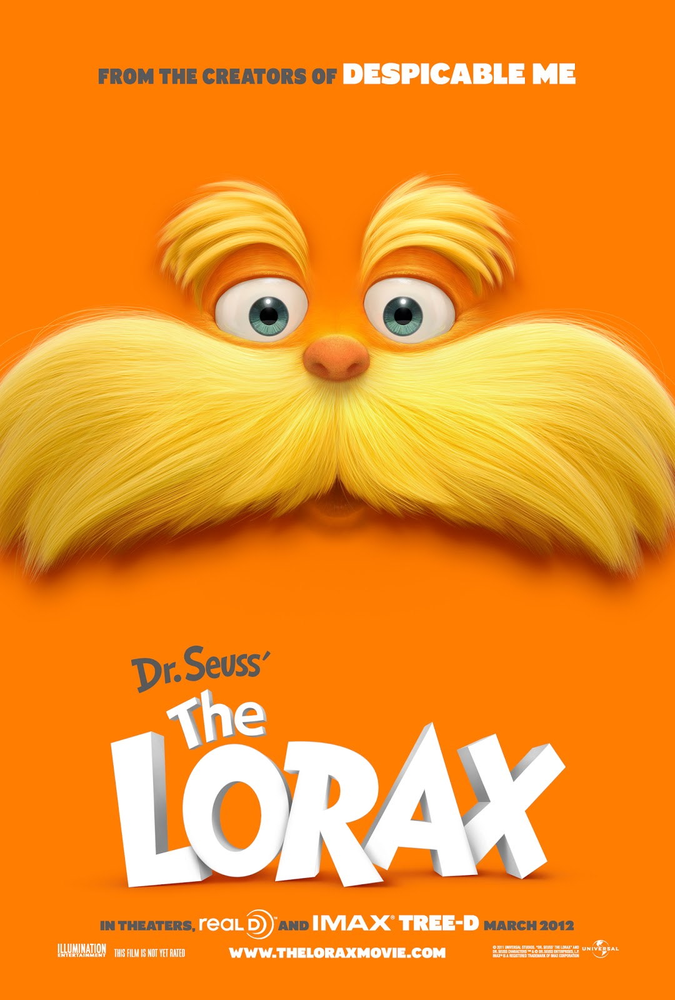

El Lorax
Un chico de 12 años busca lo único que le permitirá ganarse el afecto de la chica de sus sueños. Para encontrarlo, debe descubrir la historia del Lorax, una encantadora aunque malhumorada criatura que lucha por proteger un mundo en vías de extinción.